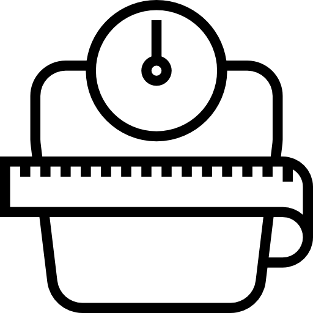

Calcular IMC
IMC é a sigla para Índice de Massa Corporal,que é um cálculo que serve para avaliar se a pessoa está dentro do seu peso ideal em relação à altura.
| Informe seu peso: | |
| Informe sua altura: | |
IMC é a sigla para Índice de Massa Corporal,que é um cálculo que serve para avaliar se a pessoa está dentro do seu peso ideal em relação à altura.
| Informe seu peso: | |
| Informe sua altura: | |